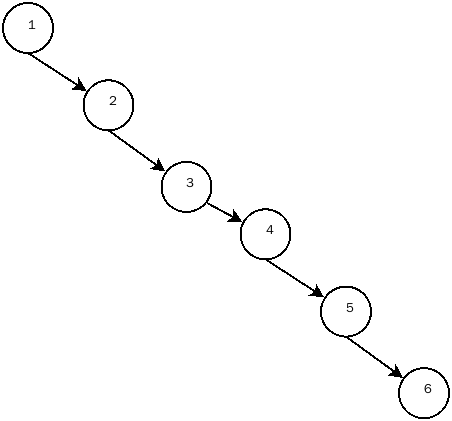
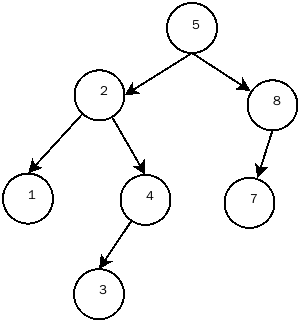
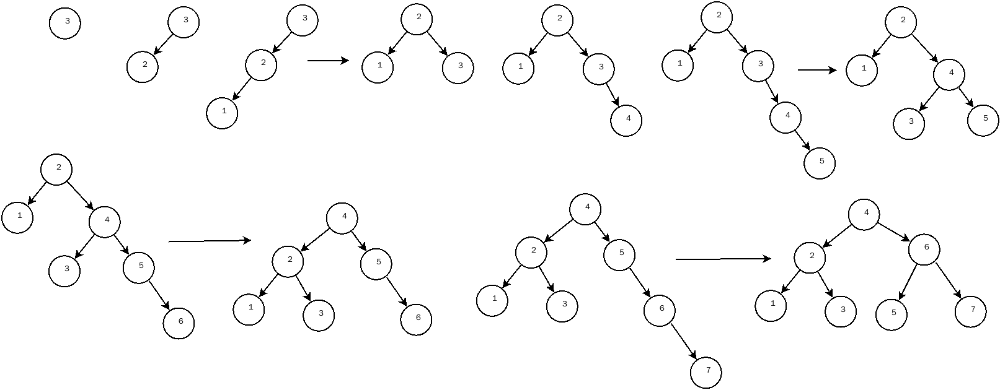
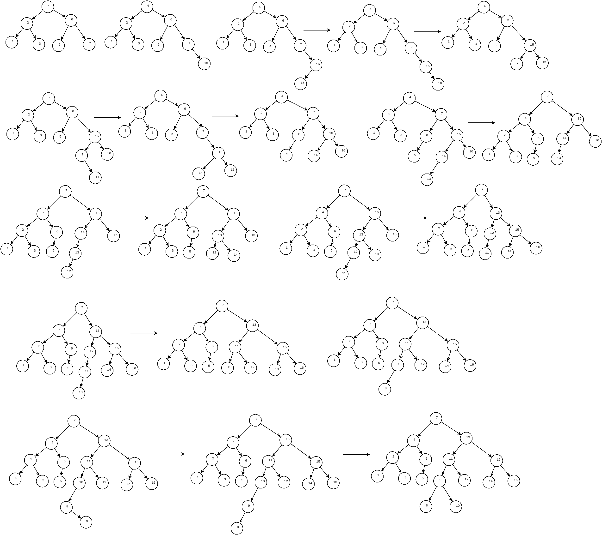

AVL 树是带有平衡条件的二叉查找树，所谓平衡条件就是:任何节点的深度均不得过深，如下图所示的二叉查找树是不应该出现的

一颗 AVL 树是其每个节点的左子树和右子树的高度最多差1的二叉查找树（空树的高度定义为-1），这是一颗 AVL 树，树的高度为 3

AVL树的定义
1
2
3
4
5
6
7
8
9
10
11
12
13
14
15
16
17
18
19
20
21
|
struct AvlNode;
typedef struct AvlNode* Position;
typedef struct AvlNode* AvlTree;
typedef int ElementType ;
AvlTree MakeEmpty(AvlTree T);
Position Find(ElementType X,AvlTree T);
Position FindMin(AvlTree T);
Position FindMax(AvlTree T);
AvlTree Insert(ElementType X,AvlTree T);
AvlTree Delete(ElementType X,AvlTree T);
ElementType Retrieve(Position P);
struct AvlNode{
ElementType Element;
AvlTree Left;
AvlTree Right;
int Height;
};
|
可以看见，AVL 树和二叉查找树的定义没有什么区别，在节点定义上多了一个变量用来存储树的高度
AVL树的实现
AVL 树的不同主要体现在插入和删除时的不同，在插入和删除时都有可能破坏 AVL 树的平衡，此时就需要对 AVL 树进行平衡修复
AVL树的插入实现
 图摘自维基百科
图摘自维基百科
进行插入操作时，有四种情况可能破坏AVL树的平衡，我们把被破坏的平衡的节点称为root
- 对 root 左儿子的左子树进行一次插入，对应上图的左左情况
- 对 root 右儿子的右子树进行一次插入，对应上图的右右情况
- 对 root 左儿子的右子树进行一次插入，对应上图的左右情况
- 对 root 右儿子的左子树进行一次哈入，对应上图的右左情况
对于 1，2 情况，插入节点相对于 root 节点的’外侧’，这时只需要对 root 节点和 root 节点的左儿子或者右儿子进行一次右旋转或者左旋转就可以了; 3，4 情况相对于 root 节点的’内侧’，这是需要实行两次的旋转达到平衡
注意，无论是一次旋转还是两次旋转，都是为了满足二叉查找树的性质和平衡条件
下图演示了依次将 3,2,1,4,5,6,7,16,15,14,13,12,11,10,8,9 插入 AVL 树的过程，带箭头的表示插入时使用了旋转操作

上图演示了从1到7顺序插入AVL树的过程，这里都是1和2的情况

插入代码实现
1
2
3
4
5
6
7
8
9
10
11
12
13
14
15
16
17
18
19
20
21
22
23
24
25
26
27
| AvlTree Insert(ElementType X,AvlTree T){
if(T == NULL){
T = (AvlTree)malloc(sizeof(struct AvlNode));
if(T == NULL) return NULL;
T->Left = T->Right = NULL;
T->Element = X;
T->Height = 0;
}else{
if(X > T->Element){
T->Right = Insert(X,T->Right);
if(Height(T->Right) - Height(T->Left) == 2)
if(X > T->Right->Element)
T = SingleRotaleWithRight(T);
else
T = DoubleRotaleWithRight(T);
}else{
T->Left = Insert(X,T->Left);
if(Height(T->Left) - Height(T->Right) == 2)
if(X < T->Left->Element)
T = SingleRotaleWithLeft(T);
else
T = DoubleRotaleWithLeft(T);
}
}
T->Height = max(Height(T->Left),Height(T->Right)) + 1;
return T;
}
|
AVL树的删除实现
AVL树的删除实现比起插入实现要复杂
基本想法是删除成功时，修正删除路径上节点高度，然后判断删除路径上的节点的平衡，然后进行旋转
删除失败时，不改变任何东西
由于删除功能是按照本人自己的想法实现，实现过程较长，这里不进行展示，如有兴趣可以查看参考源码
参考源码